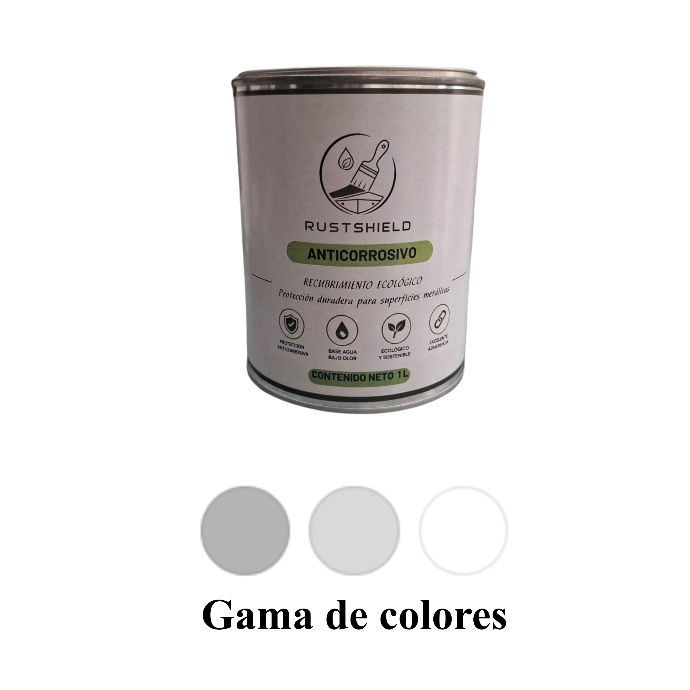
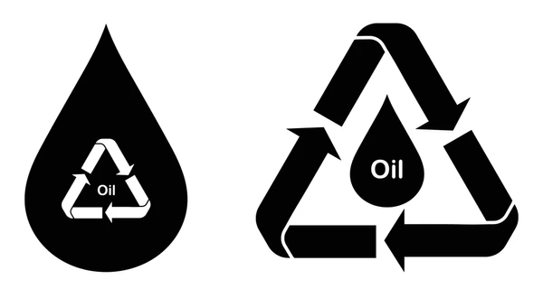

Conoce nuestro producto

Presentación de un litro y 3 colores
Proceso y formulacion
Conoce nuestro proceso y formulación
Normatividad y usos

Impacto ambiental positivo y gran cantidad de usos
Ficha técnica
Conoce nuestra ficha técnica